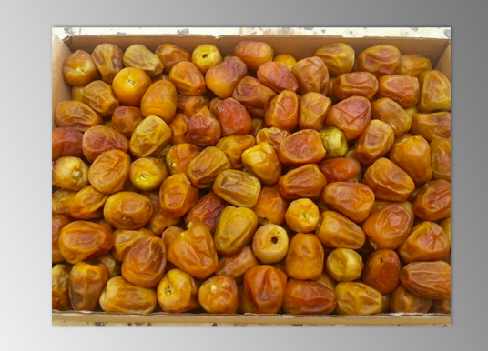
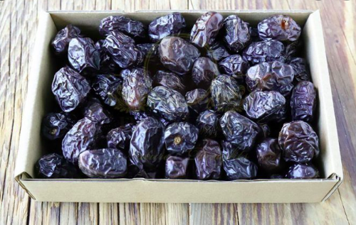

KURMA SUKARI
Kurma sukkari merupakan salah satu varietas kurma yang ada di pasaran indonesia. kurma jenis ini yang paling banyak diminati oleh orang indonesia dikarenakan rasa manis yang sedang dan tekstur nya yang lembut,harga nya yang relatif murah, warnanya dari coklat gelap sampai coklat terang.harga/kg= Rp.100.000 ongkos kirim pulau jawa Rp 5000/kg,luar jawa Rp 10000/kg
KURMA AJWA
Kurma jenis ini berwarna cenderung kehitaman,teksturnya juga lembut hanya saja menurut penulis untuk tekstur kurma sukkari masih lebih lembut kurma Ajwa diyakini oleh memiliki kemampuan yang tidak dimiliki oleh kurma jenis lainnya yaitu kemampuan menangkal penyakit yang disebabkan oleh ilmu sihir.untuk harga kurma ajwa memiliki harga yang lebih mahal dibanding kurma jenis sukkariharga/kg= Rp.180.000 ongkos kirim pulau jawa Rp 5000/kg,luar jawa Rp 10000/kg .